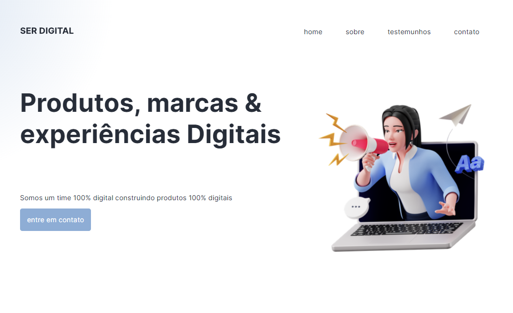

HTML/CSS Design
Especialista em HTML e CSS, tanto na criação de designs quanto semântica HTML:5, alto domino nas duas tecnologias e com certificado de término de curso pela Udemy. Além da minha faculdade que atualmente faço pela UniRitter, ainda estou fazendo diversos cursos para me especializar e aprimorar ainda mais na área de TI. Especialista em Design e layouts, com base nessas tecnologias já citadas sou capaz de auxiliar e desenvolver layouts responsivos e elegantes.
Exemplo:
Este é um exemplo aonde eu criei um design de uma página fictícia completamente responsiva, utilizando somente HTML: 5 e CSS.
